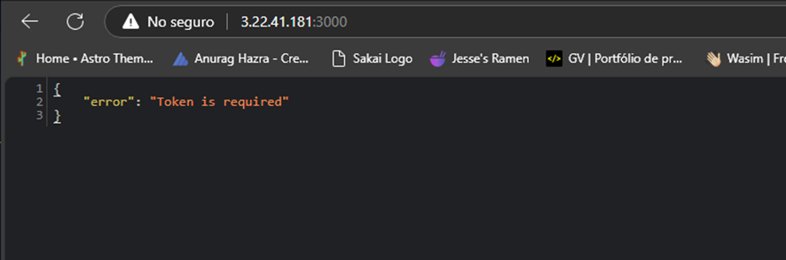

Guía completa para desplegar la aplicación
Asegúrate de que estás utilizando una versión compatible de Ubuntu (preferiblemente 20.04 LTS o superior).
Ejecuta el siguiente comando para verificar la versión:
lsb_release -a
La salida debe mostrar algo como:
Distributor ID: Ubuntu
Description: Ubuntu 20.04 LTS
Release: 20.04
Codename: noble
Antes de instalar cualquier software, es recomendable actualizar el sistema para asegurar que los paquetes estén al día. Ejecuta:
sudo apt-get update && sudo apt-get upgrade -y
Node.js es necesario para ejecutar el backend. Para instalarlo, puedes usar el siguiente comando:
sudo apt-get install -y nodejs
npm se instala junto con Node.js, pero si no lo tienes, instálalo de la siguiente manera:
sudo apt-get install -y npm
Verifica que Node.js y npm se hayan instalado correctamente:
node -v
npm -v
Para el backend, utilizaremos PostgreSQL como sistema de gestión de base de datos.
sudo apt-get install -y postgresql postgresql-contrib
Verifica que PostgreSQL esté funcionando correctamente con:
sudo systemctl status postgresql
Clona el repositorio de tu aplicación desde GitHub o el repositorio correspondiente:
git clone https://github.com/Jheyson-Dev/analitica-back.git
cd backend
Una vez que el repositorio esté clonado, instala las dependencias necesarias para el backend utilizando npm:
npm install
Para crear la base de datos y el usuario para la aplicación, sigue estos pasos:
sudo -u postgres psql
CREATE DATABASE cabanilla;
CREATE USER admin WITH ENCRYPTED PASSWORD 'admin';
GRANT ALL PRIVILEGES ON DATABASE cabanilla TO admin;
\q
Antes de ejecutar el backend en producción, asegúrate de compilar el código:
npm run build
PM2 es una herramienta para administrar aplicaciones Node.js en producción, asegurando que se mantengan activas incluso después de un reinicio del sistema.
sudo npm install -g pm2
pm2 start dist/main.js --name "backend-app"
pm2 startup
pm2 save

Nginx se utilizará como servidor web inverso para dirigir el tráfico hacia el frontend:
sudo apt-get install -y nginx
Configura Nginx para que redirija el tráfico HTTP al frontend. Crea un archivo de configuración en:
sudo nano /etc/nginx/sites-available/front
Agrega la siguiente configuración:
server {
listen 80;
server_name 3.22.41.181; # Reemplaza con tu IP pública o dominio
location / {
root /home/ubuntu/analitica-front/dist; # Reemplaza con la ruta a tu carpeta dist
try_files $uri $uri/ /index.html;
}
}
Habilita la configuración y reinicia Nginx:
sudo ln -s /etc/nginx/sites-available/front /etc/nginx/sites-enabled/
sudo systemctl restart nginx
Dirígete al directorio del frontend y ejecuta la compilación:
npm run build
Una vez compilado, puedes servir los archivos estáticos usando Nginx o un servidor estático según prefieras.
Accede a tu dominio o IP pública para verificar que el backend y frontend estén funcionando correctamente.
Si tienes problemas con la instalación, revisa los logs de Nginx y del sistema para detectar posibles errores.
sudo journalctl -xe
sudo tail -f /var/log/nginx/error.log